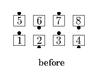
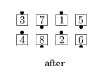

From Parallel Waves or other applicable formations: Leaders Circulate, while the Trailers, instead of doing a normal Circulate to the spot directly in front of them, go to the spot Once Removed, to the right or left, from the spot directly in front of them. Parallel Waves end in Parallel Waves. Traffic pattern: From R-H Waves Trailers use a R-H Star; from L-H Waves Trailers use a L-H Star. This call cannot be fractionalized.
 
© Copyright 2004-2017 Vic Ceder and CALLERLAB Inc., The International Association of Square Dance Callers. Permission to reprint, republish, and create derivative works without royalty is hereby granted, provided this notice appears. Publication on the Internet of derivative works without royalty is hereby granted provided this notice appears. Permission to quote parts or all of this document without royalty is hereby granted, provided this notice is included. Information contained herein shall not be changed nor revised in any derivation or publication.